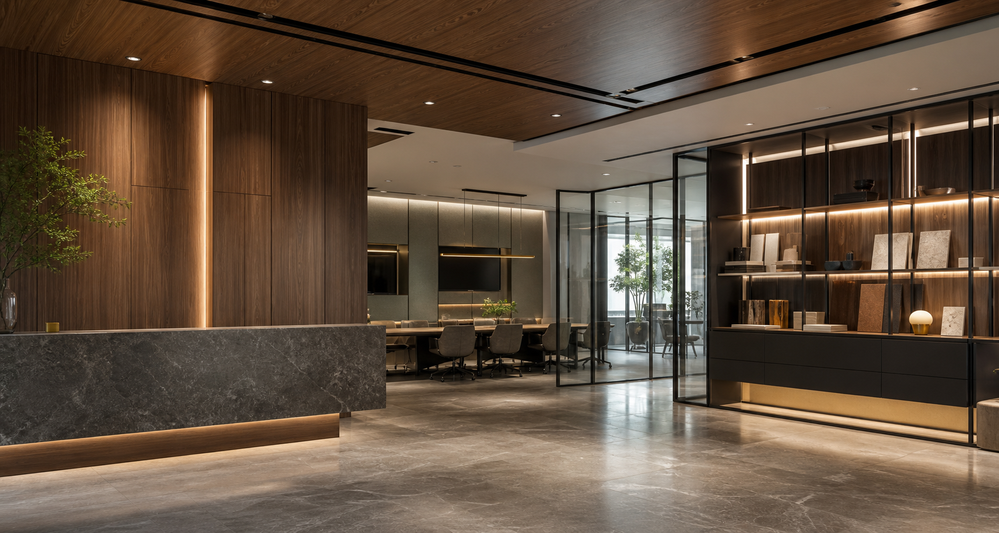
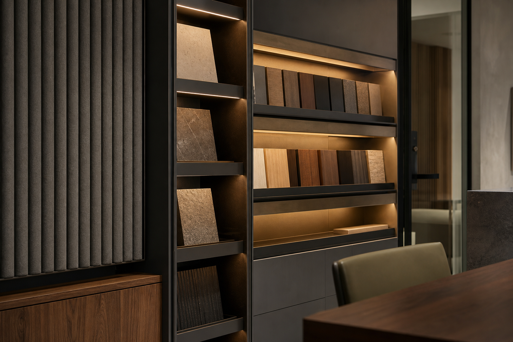

接待層次
入口與會議區以一致的品牌語彙延伸，讓第一次到訪的客戶能感受到專業與穩定。

Case 03 / Office
辦公與展間案例重視信任感、機能與品牌秩序。此頁透過清楚資訊層級與細膩動畫，讓B2B客戶能迅速理解空間如何支援會議、展示與日常工作。
Back to WorksProject Story
辦公展間案例頁適合用更清楚的資訊架構呈現。訪客通常帶著明確需求而來，因此頁面以機能區塊、動線配置、會議接待與展示需求來說明空間價值。
入口與會議區以一致的品牌語彙延伸，讓第一次到訪的客戶能感受到專業與穩定。
將開放辦公、討論區與收納牆整合，降低動線干擾，讓日常使用與形象展示取得平衡。
展間牆面與燈光可依新品、簡報或客戶拜訪切換，案例頁則用段落呈現可變機能。


Back to First Case